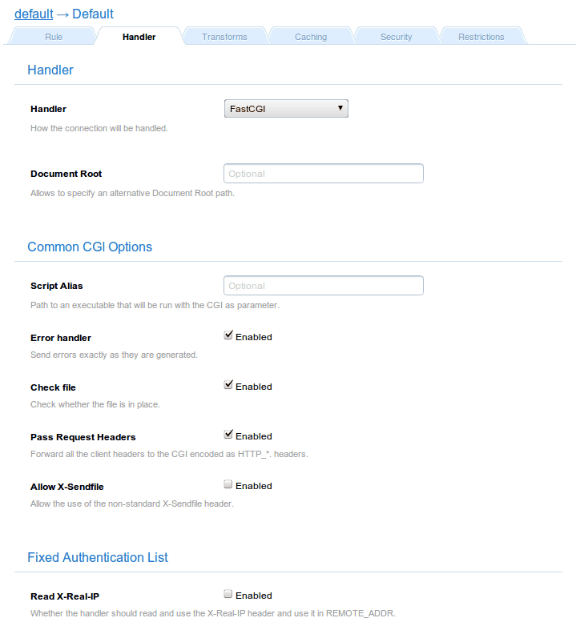

Handler: FastCGI
The fcgi handler queries to [FastCGI] servers, such as PHP, Ruby on
Rails or Django in order to get the request response. It is basically
the same thing as CGI but much faster.
This module accepts all the general CGI parameters. Aside, it needs
a balancer to be configured. It is the piece of configuration that
points the handler where to find the FastCGI servers.
For most of the cases there will be only one FastCGI server though. In
that scenario the way is to configure the handler to use a Round
Robin balancer and configure a single host or interpreter (it has no
performance penalty).
Parameters
| Parameters |
Type |
Description |
|---|
| Script Alias |
String |
It defines a kind of execution interpreter |
| Change to UID |
String |
It interprets each CGI as it owner user |
| Error handler |
Boolean |
Use CGI output as error message |
| Check file |
Boolean |
Checks whether the target exists for
building the PATH_INFO |
| Pass request |
Boolean |
Pass the all the special headers of the
client request |
Examples
This example shows a typical usage of FastCGI. It connects to a FastCGI server located
in localhost in port 8002. If no server is running, the webserver will run the FastCGI
server by issuing command defined in Interpreter sub-parameter:

This example shows a typical usage of multiple FastCGI servers. It connects to a
FastCGI servers located in several locations. If no server is running in the local
computer, the webserver will run the FastCGI server by issuing command defined in
Interpreter sub-parameter. Note that for remote FastCGI servers, you are responsible
to run the FastCGI servers there manually:
Configuring PHP
The PHP_FCGI_CHILDREN environment variable is mandatory for PHP
FastCGI servers. It defines how much children should serve the
requests coming from the webserver.
If you define PHP_FCGI_MAX_REQUESTS, the value should be negative
so that PHP would take the request as much as possible. If you left it
unset, PHP will take the default value (500) and your 500th request
will be rejected and FCGI handler will spew Error 500 (Internal server
error) for it.
Note for developers
There a are two handler implementing the FastCGI protocol: "fcgi" and
"fastcgi".
The "fastcgi" module also implements the FastCGI protocol. It is a
more complete implementation than "fcgi" although it is also more
complex. Actually, fcgi become the standard choice because the PHP
interpreter was kind of buggy when it had to demultiplex multiple
requests from the same socket.
The "fastcgi" handler will eventually become the default option.
However, by the moment "fcgi" is a better option.